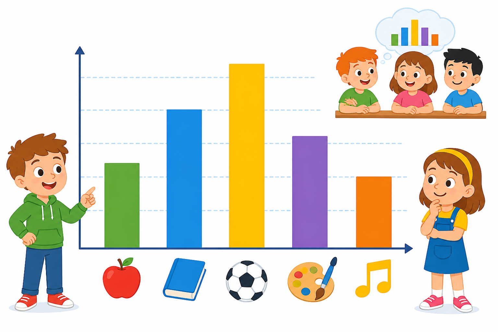

Co to jest? Що це?
Statystyka pomaga opisywać świat liczbami i wykresami oraz wyciągać wnioski.
Статистика допомагає описувати світ числами і графіками та робити висновки.
Jak w szkole? Як у школі?
Dane → porządek → wykres → wniosek.
Дані → порядок → графік → висновок.
Przykład z życia Приклад з життя
Ankieta w klasie → liczby → wniosek: „najwięcej lubi niebieski”. To statystyka.
Опитування в класі → числа → висновок: «найбільше люблять синій». Це статистика.
dane → wnioski